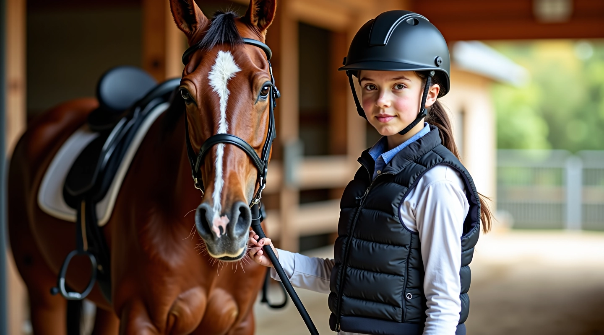
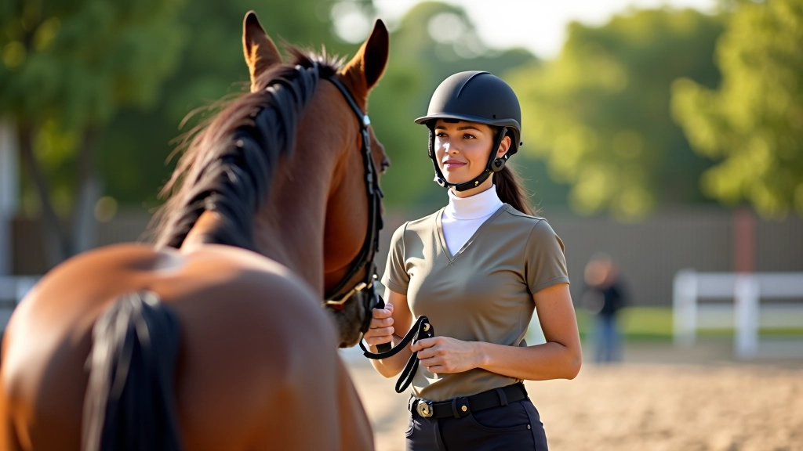
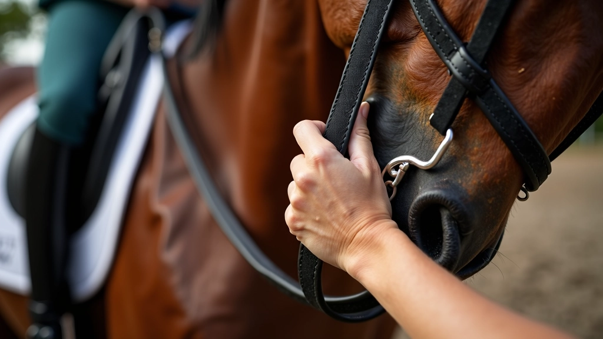
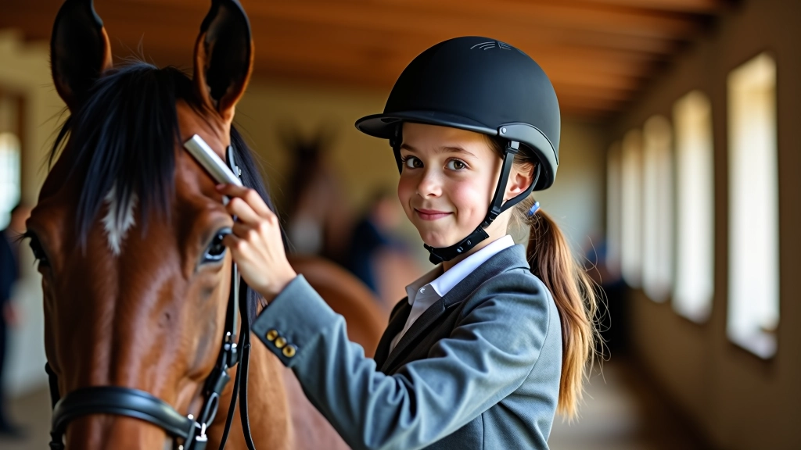
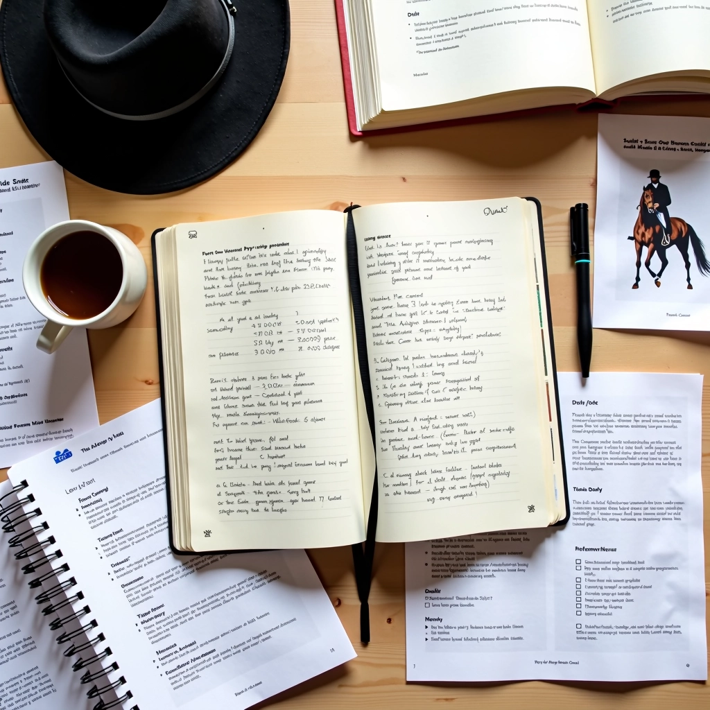

اختيار المعدات الواقية المناسبة
شرح تفصيلي لكيفية اختيار الخوذة والسترة الواقية والحذاء المناسب لممارسة الفروسية...
اقرأ المزيدتعلم كيفية بناء علاقة آمنة وموثوقة مع حصانك من خلال فهم سلوكه والتعامل معه بالطريقة الصحيحة قبل وبعد الركوب.

الحصان حيوان ذكي وحساس جداً. يشعر بخوفك وثقتك، ويتفاعل معك بناءً على لغة جسدك والنبرة التي تستخدمها. قبل أن تفكر في الركوب، يجب أن تتعلم كيفية التعامل معه بأمان من الأرض. هذا ليس فقط عن تجنب الإصابات — إنه عن بناء علاقة قائمة على الثقة والاحترام المتبادل.
في الأسابيع الأولى من تدريبك، ستقضي وقتاً طويلاً بجانب الحصان قبل أن تركبه فعلاً. ستتعلم كيفية اقتراب آمن، وكيفية تمريره، وكيفية التعامل مع أنفاسه ومزاجه. كل هذا يؤثر على أدائك لاحقاً.
لا تقترب من الحصان من الخلف أو من الجانب العمياني (الجانب الأيسر من رأسه حيث لا يراك). دائماً اقترب من الأمام أو من الجانب الذي يراك فيه. تحدث معه بصوت هادئ وثابت — الحصان يتعرف على صوتك ويستريح له.
عندما تكون بالقرب من الحصان، حافظ على مسافة آمنة من أرجله. حصان واحد يمكنه أن يركل بقوة كافية لإيذاء شخص بشكل خطير. إذا كنت بجانبه تقريباً، فهو لن يستطيع الركل بقوة كاملة — وهذا موقع آمن أكثر من الوقوف مباشرة خلفه.


اللجام والسيطرة على الحصان يتطلبان قوة معتدلة وثابتة — ليست قوة غاشمة. إذا شددت اللجام بقسوة، فستؤذي فم الحصان وستجعله يتوتر ويقاوم. الحصان يحتاج إلى شعور واضح لكن لطيف يخبره بما تريد.
عند قيادة الحصان من الأرض (قبل الركوب)، امسك اللجام بقرب من رأسه — حوالي 30 سنتيمتراً من زاوية فمه. اترك لنفسك متسع حركة كافٍ للسيطرة، لكن لا تسحب بقوة. الحصان يجب أن يشعر بأنك قائد واثق، وليس شخصاً خائفاً يسحبه للأمام.
هل الحصان هادئ ومركز؟ أم أنه عصبي وقلق؟ لا تحاول الركوب إذا كان الحصان مضطرباً. اقضِ وقتاً إضافياً معه لتهدئته — امش معه، تحدث إليه، دع نفسك تصبح جزءاً من بيئته الهادئة.
تحقق من السرج واللجام والسيطرة بحثاً عن أي تلف. تأكد من أن كل شيء مثبت بإحكام. معدات مفككة أو مكسورة يمكن أن تسبب حادثة في لحظة حرجة.
لاحظ إذا كان الحصان يعرج أو يبدو مؤلماً في أي مكان. إذا كان الحصان يؤلمه شيء، فسيكون سلوكه غير متوقع. تحدث مع مدربك إذا لاحظت أي شيء غير عادي.
استمع إلى تنفس الحصان. إذا كان يتنفس بصعوبة أو بسرعة غير عادية، فقد يكون مرهقاً أو مريضاً. لا تركب حصاناً متعباً أو مريضاً.
الثقة تُبنى عبر التكرار والاتساق. إذا كنت دائماً هادئاً ولطيفاً مع الحصان، فسيتعلم أن يثق بك. إذا كنت عصبياً أو غير متوقع، فسيبقى متوتراً من حولك. هذا ليس شيئاً يحدث بين ليلة وضحاها — قد يستغرق أسابيع أو حتى أشهر لبناء علاقة قوية.
قضِ وقتاً مع حصانك خارج أوقات التدريب الرسمية. امش معه، امسح له فروته، تحدث إليه. هذا الوقت غير الرسمي يساعد الحصان على فهمك أفضل وبناء رابطة عاطفية حقيقية معك.

صعود الحصان ونزوله قد يبدو بسيطاً، لكنه يتطلب تقنية صحيحة. إذا صعدت بشكل خاطئ، فقد تسحب على فم الحصان وتؤذيه، أو قد تفقد توازنك.
قف على الجانب الأيسر من الحصان (الجانب الذي يركب منه دائماً). امسك اللجام بيدك اليسرى وقرب من جسم الحصان.
ضع قدمك اليسرى في الركاب — لكن لا تضع وزنك الكامل عليها حالاً. استخدم يدك اليمنى لتمسك بقوس السرج للمساعدة.
ادفع نفسك لأعلى برفق وانزل بسلاسة على السرج. كن حذراً — لا تسقط بقوة على ظهر الحصان لأن ذلك يؤلمه ويمكن أن يجعله يرتعد.
الحصان يتواصل معك من خلال جسده. أذناه تخبرك الكثير — إذا كانت متوجهة للأمام، فهو منتبه وهادئ. إذا كانت متراجعة للخلف أو ملصقة بجانب رأسه، فهو غاضب أو خائف. ذيله أيضاً مهم — حصان مسترخي يرخي ذيله، لكن حصان عصبي يشد ذيله.
تعلم قراءة هذه الإشارات يمكن أن ينقذ حياتك. إذا رأيت حصاناً بأذنين متراجعتين وعينين مشدودتين، فابتعد. لا تحاول قيادته أو الركوب عليه في تلك اللحظة. أعطه مساحة وانتظر حتى يهدأ.
بعد جلسة ركوب، لا تترك الحصان وتذهب مباشرة. الحصان الذي عمل للتو يحتاج إلى التهدئة والراحة. اسحبه ببطء لتقليل سرعة نبضات قلبه، ثم اغسله بماء بارد لإزالة العرق. في الأيام الحارة، هذا مهم جداً لصحته.
تحقق من حوافره للتأكد من عدم وجود حجارة عالقة. افحص جسده بحثاً عن أي جروح أو كدمات قد لا تكون لاحظتها أثناء الركوب. أخيراً، اترك الحصان في مكان آمن مع ماء نظيف ووقت كافٍ للراحة. الحصان المتعب أكثر عرضة للإصابة في اليوم التالي.
التعامل الآمن مع الحصان ليس مجرد مجموعة من القواعد التي تحفظها. إنه عن فهم حيوان ذكي وحساس والعمل معه برفق واحترام. كل مرة تقضيها مع حصانك — سواء كنت تركب أم لا — هي فرصة لبناء علاقة أقوى وأكثر أماناً. لا تتسرع في هذه العملية. الصبر والاتساق سيجعلك متسابقاً أفضل وشخصاً أكثر أماناً في الحلقة.
هذا المقال مقدم لأغراض تعليمية فقط ولا يحل محل التدريب المباشر من مدرب مؤهل. تعامل الحصان يتطلب خبرة عملية وإشراف متخصص. تأكد دائماً من التدريب تحت إشراف مدرب معتمد وفي بيئة آمنة. كل حصان مختلف، وما ينجح مع حصان قد لا ينجح مع آخر. استمع دائماً إلى نصائح المدربين والمتخصصين في الفروسية.

فريق التحرير
كتبه فريق تحرير فارس الأمان، متخصص في تقديم إرشادات عملية وموثوقة حول سلامة الفروسية للناشئين.

شرح تفصيلي لكيفية اختيار الخوذة والسترة الواقية والحذاء المناسب لممارسة الفروسية...
اقرأ المزيد
تعلم الطريقة الصحيحة للجلوس على الحصان والحفاظ على التوازن أثناء الحركة والتعامل...
اقرأ المزيد
اكتشف القواعس الأساسية التي يجب اتباعها في حلقة التدريب لضمان سلامتك وسلامة الآخ...
اقرأ المزيد